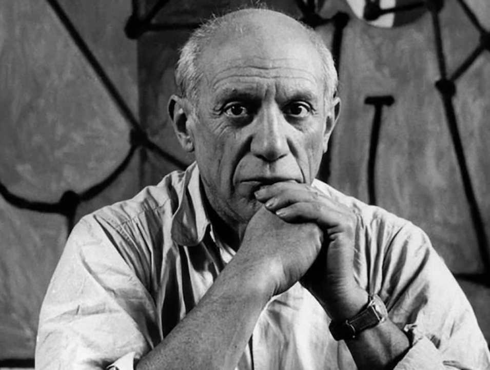

Pablo Picasso was a Spanish artist who became one of the most influential figures in modern art. He worked in many forms, including painting, drawing, sculpture, printmaking, ceramics and theatre design.
Picasso is especially known for co-founding the Cubist movement with Georges Braque. His artistic career covered many different styles and periods, and he continuously experimented with new ways of representing people, objects and ideas.
Some of his most famous works include Les Demoiselles d'Avignon, Guernica, The Old Guitarist and Girl before a Mirror. His long and varied career made him an important figure in 20th-century art.